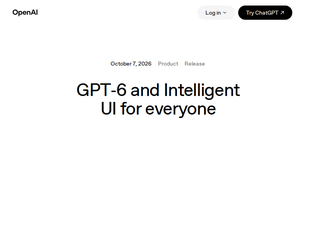
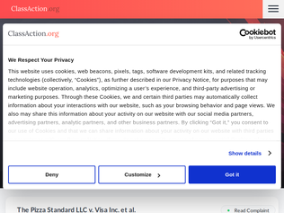
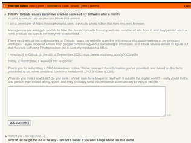
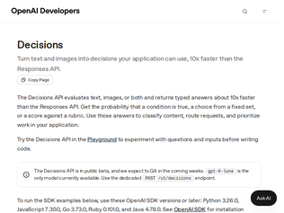

"I was able to meet her, and others who worked at the MIT Instrumentation/Draper Lab, as a start-up I was with received funding from a VC firm founded by other Draper Lab members from the Apollo era. I was totally out of my league talking with them. This was thirty years ago and I remember her talking about formalized control systems. It was fascinating but went totally over my head. My startup was a fairly silly multimedia CD-ROM company and I was just happy to be in the room."
"Related:Margaret Hamilton Led the NASA Software Team That Landed Astronauts on the Moon - https://news.ycombinator.com/item?id=36720448 - July 2023 (32 comments)Margaret Hamilton oral history (2017) - https://news.ycombinator.com/item?id=30668338 - March 2022 (7 comments)An interview with Margaret Hamilton - https://news.ycombinator.com/item?id=20453737 - July 2019 (12 comments)Grace Hopper and Margaret Hamilton Awarded Presidential Medal of Freedom - https://news.ycombinator.com/item?id=12991524 - Nov 2016 (70 comments)Profile of Margaret Hamilton, programmer of the Apollo software - https://news.ycombinator.com/item?id=10379904 - Oct 2015 (58 comments)Margaret Hamilton, lead software engineer, Project Apollo - https://news.ycombinator.com/item?id=8735912 - Dec 2014 (94 comments)"
"Dang. She was a remarkable stand-out, in fields full of remarkable people.The pic here is often people's first intro to her https://news.mit.edu/2016/scene-at-mit-margaret-hamilton-apo..."
"Pelicans riding bicycles for Haiku at the different thinking levels: https://tools.simonwillison.net/markdown-svg-renderer?url=ht...Low messes up the bicycle frame, but medium/high/xhigh/max all get the bicycle frame right.The max one took 5 minutes 9 seconds and cost 3.3826 cents. The cheapest one (low) cost 0.0936 cents and took 7 seconds.The most recent release of my llm-anthropic plugin queries the Anthropic model listing API directly, so I didn't have to upgrade the plugin to add support for this model: llm install llm-anthropic -U llm anthropic refresh llm -m claude-haiku-5.5 'prompt goes here' EDIT: Here's the Haiku 4.5 pelican from a year ago for comparison, it was terrible: https://simonwillison.net/2025/Oct/15/claude-haiku-45/"
"Pricing is...a bit weird. Input $0.10 / MTok for prompts up to 100,000 tokens $0.50 / MTok for prompts over 100,000 tokens Output $0.50 / MTok for prompts up to 100,000 tokens $2.50 / MTok for prompts over 100,000 tokens 100k tokens is an absurdly low cutoff and it is only applicable to Haiku and not Sonnet or Opus. It's a low enough cutoff that it will be quickly exceeded if you are doing anything with Agents; for typical generation or Jev-like classifiers, it's a good value and as noted in this article, that is apparently the vast majority of Haiku use.In both cases, still much cheaper than Haiku 4.5's $1 input / $5 output and these prices better compete with GPT-6 Luna. ($0.10 input / $0.50 output, but with no token threshold [EDIT: the threshold for Luna is apparently 272k])"
"> Second, this week, we’ll roll out a new monthly API credit to all Max and Team subscribers for use on the Claude Platform. Max 5x users will get $100 in credits per month, Max 20x users will get $200, and Team subscribers will receive up to $500, pooled across their usersThis is a very big benefit for me. I can now ship actual ai enhanced features behind my subscription without paying extra or fully relying on on-device models. I do worry that this is to soften the blow for user-unfriendly changes"

"I find the Sunday roast comparison of 5.6 vs 6 very interesting. I have no doubt most people will prefer 6, yet I am almost repulsed by all the images, so much needless whitespace, checklist and so on. Feels like I'm being condescended to and treated like a child.Given that OpenAI is making noises about merging work with chat (a horrible idea imo), and Work is very similar to Codex... I dearly hope things like these won't have any meaningful cross-polination into the actual work tools.Seeing that the chat is based on 6.0 and not 6.1 is disappointing. The "Visual and interactive explanations" seems genuinely useful, but 6.1 is just so much better. I wouldn't truly trust the 6.1 with the explanations, but I'd trust them a fair bit more than 6.0. I understand that compute isn't infinite, but tons of people only interact with the chat and having your "things-explainer" be as good as it can be is important when people increasingly treat AI models as the source of truth, or even use them for academic learning and whatnot.Still, the models will improve, so the visual explainer seems pretty good as an idea / mvp."
"Of everything that could be automated, Bartosz Ciechanowski really was the last on my list.In all seriousness, his lovingly and expertly crafted explainers are still going to age like a handcrafted heirloom clock in a world of plastic-clad quartz movements. But it’s absolutely incredible that we are now in an age where a computer can manufacture a serviceable interactive explainer on whatever niche topic you desire."
"https://cdn.openai.com/pdf/gpt-6-october.pdfSystem card linked in the blog post.> regression on the extremism vision evaluation.> Relative to their respective GPT-5.6 counterparts, GPT-6 Sol (October) shows a statistically significant regression on standard self-harm, while GPT-6 Luna (October) shows statistically significant regressions on standard self-harm, gore, and sexual content> "GPT-6 Sol (October) and GPT-6 Luna (October) show an improvement on helpfulness on legitimate requests relative to prior models, though it scores lower on some safety requests"Concerning how there's significant regressions on so many critical benchmarks, but it is newer and creates UI, so must be good.It’s crazy that a company can document these safety drops in a PDF, ship the model anyway, and focus the announcement entire on shiny new UI"

"One thing I've noticed with the bigger gas station chains near me is a push to have users download their mobile app, set up ACH payments, and use that as their payment method instead of credit cards in exchange for 10 cents off per gallon. From the merchant side of things, they're paying about $0.60 to process the transaction via ACH, versus $2-$2.50 for credit card transactions, per fill-up. So even if they're merely breaking even once the discounts are factored in, they're still disrupting the credit card companies' dominance.I would not be surprised if rather than continuing to battling it out with the credit card companies to negotiate for lower fees, more and more retailers adapt to the cashless economy by leaning on ACH in lieu of credit cards, especially in market segments where repeat business is common (basically any retailer that has an existing loyalty program).To put it another way: Sure, litigation is an option, but even if you win the concessions you want, it will leave the credit card companies entrenched. Pushing more customers to pay via non-credit-card methods has the benefit of more immediate financial impact, less reliance on the legal system, and deterioration of the power that led to the anticompetitive behavior in the first place."
"Basic reforms that could solve this problem:1. Merchants need to be allowed to add card processing fees on top of any transaction, and it should be possible to do this very easily. If not this, then any receipt should be required to include card processing fees.2. Merchants should be allowed to pick and choose which cards they accept without penalty.Those two simple changes would add competitive pressure back into the payment processing market, and quickly cause fees to lower."
"I do think we're getting to the point that middlemen don't have much value add. Economics even suggests they don't add value I think. Possibly neutral markets, payments, and logistics should just be a public service."

"First off, let me get this out of the way - I am not a lawyer. If you want a legal advice talk to a lawyer.Second, I am sorry this is happening to you.Third, based on GitHub's reply, specifically> we're unable to confirm a violation of 17 U.S. Code § 1201they took your submission as 17 U.S. Code § 1201 takedown notice. Maybe you specifically stated this. Maybe it was implied. This is likely not what you want and GitHub's response is likely correct. The reason for this is that § 1201 prohibits circumventing a technological measure. The JS you host on your public site, even if obfuscated, very likely does not qualify for this protection. Another detail - the reason it took long (a month later according to your post) is that after the youtube-dl fiasco, they committed to manual review, legal and technical, of every 1201 takedown notice [0].Fourth, if you believe these copies are sufficiently reproducing your copyrighted work, what you likely want to do is file a standard copyright infringement 17 U.S Code § 512(c) takedown notice. This still goes through the same DMCA report flow but it should result in a less stringent review process and a faster response.Fifth and finally, consider asking your favorite LLM to get more context around these laws. Good luck![0] https://github.blog/news-insights/policy-news-and-insights/s..."
"IP lawyer here - I can't give you actual legal advice because you aren't my client, but generally, you have two options here, neither of which will be surprising, or very satisfying:1. Pay a lawyer or firm that specializes in this sort of thing to play whack a mole for you2. Accept it as normal losses and ignore it.Contrary to others claims here, it is not a 500/hour thing to do #1 when dealing with firms that specialize in this. it probably would be if you just hire a random one-off IP lawyer to try and deal with this particular instance.Trying to deal with it yourself will be increasingly frustrating and time wasting for you. You will also never be able to prevent someone sufficiently motivated from doing stuff like this to your software.Unless you want to spend your time dealing with those folks instead of building the software, you should hand this part off - it's not a good use of your time, value wise.Put another way: most companies farm out processing of this sort of request to high volume low cost processing teams. Or AI. Or both. For you this is an important one off. For the person processing it it's one of a hundred tickets they are handling today. You are not going to get very personalized attention and consistency.I don't claim this is how it should be, etc. I simply claim this is how it realistically is. It would practically require legislative change to have a different thing happen here and while interesting to discuss, that seems outside the scope of your questions, which seemed more practically oriented"
"> take the Javascript code from my website, remove all ads from it, and they publish such a "new product" on Github for everyone to downloadRemember that there is still quite a bit of friction to doing that, and that many people have better things to do than jump through those hoops.In addition to the "hire a lawyer" comments in this thread, I suggest building in some heuristics that detect when Photopea is running outside of your domain. They don't need to be "foolproof," but add additional friction to pirating Photopea so that less people will jump through the hoops.Some historical examples:- Commercial software in the 1980s and 1990s would burn a hole on the disk, and the software would look for the error when reading that sector.- Donkey Kong Country would detect that it was pirated by reading the amount of RAM available. (Because SNES backup systems had slightly different runtime properties than the real cartridge.)More importantly, when detecting that Photopea is pirated, if it runs for 3-6 minutes and then crashes, it's more likely to look like a bug in the export than a deliberate anti-piracy attempt.---Finally, you could consider a business model that relies on server-side functionality for revenue or stickiness, that's hard to replicate merely by pirating the software. (IE, some kind of server-side storage and sharing system.)"
"And soon Firefox will include it in Stable. During October it will go from Safari only to majority coverage. Eventful month!While AVIF may have a slight edge in some cases like in fairly lossy compression, you won't really go _wrong_ with JPEG XL (unless strongly CPU constrained) and I think the strength of the format is its extreme versatility as a "be all end all image format" for some time where comparative performance depending on functionality ranges from respectable to excellent. It can work as a replacement for AVIF, PNG, JPEG, WebP, even certain TIFF required scenarios (high bit depth, multichannel, layers) depending on use cases."
"It's exciting to see JXL support being re-added in Chrome after being removed a while ago and them seemingly not being interested in supporting it [1].I think JXL is a cool image format, but was being held back by the most popular browser not supporting it, limiting its use (in the web especially) by a lot.[1]: https://issues.chromium.org/issues/40270698"
"See previous HN discussions for context:Google set to deprecate JPEG XL support in Chrome 110 - https://news.ycombinator.com/item?id=33399940JPEG XL support has officially been removed from Chromium - https://news.ycombinator.com/item?id=33933208Chrome Jpegxl Issue Reopened - https://news.ycombinator.com/item?id=46033330The case agains JPEG XL - https://news.ycombinator.com/item?id=49690554"
"I had the idea for BIGWORDS.PAGE when I wanted to display a message on a tablet that I had remote management control over, but no physical access. Configuring it to be a kiosk browser is easy, but how do I get the browser to show my message? So I made the URL be the message.It uses a URL fragment to configure the message. Browsers don't send URL fragments to the server, so I never see your message. There's no backend, and no storage.All parameters are documented, so generating a message link is easy. There's also a built-in editor to make it extra easy.https://bigwords.page/#Hello,%20HN!&bg=ff6600&fg=000000&font...There are a few extra features like slides, animations, and countdowns and timers. QR codes too. Not too fancy, but hopefully enough to be useful.I know the uses for this are pretty niche. But it may be one of those things that you keep as a nugget in your brain, a tool in your back pocket. Not something you use often, but when you do it makes things just a little bit easier.It's open source (MIT), and self-hostable if that's your thing.Let me know what you think."
"This is so brilliantly simple.I semi-regularly chair or panels and very often the venue hasn’t thought about a countdown timer so that I and the speakers know how long we have left. Having a timer massively improves the quality of a panel from an audience perspective as you can better pace things, move speakers on, wrap up without rushing, and so on.Because of how often a timer wasn’t available last year I made something where I could quickly spin one up using ffmpeg. This is much easier and much more useful. (And doesn’t require having my Mac with me!)Being able to stick one of these on an iPad on a table so that speakers can see it but audience can’t will be really useful.Thank you!"
"https://bigwords.page/#smol!%20!%20!%20!%20!%20!%20!%20!%20!...!You seem to have the same bug I had when I first implemented https://screaming.saej.in/In Firefox, scrollWidth includes spaces that extend into the margin, so it's possible for text to fit perfectly on the screen, but scrollWidth > clientWidth. Fix here https://saej.in/posts/screaming/"
"I really appreciate that EmbeddingGemma 2 is under the Apache 2.0 license.For embedding models in particular, I don't think it makes sense to use a closed, proprietary, hosted-only model.Most applications of embedding models involve calculating thousands or even millions of embedding vectors and storing them for later comparison.If your model is proprietary, the vendor is likely someday going to decide to stop offering that model. They'll have a better model to replace it, but you still need to pay to re-calculate those millions of stored existing vectors.(In April 2024 OpenAI offered to "cover the financial cost of users re-embedding content with these new models" - https://openai.com/index/gpt-4-api-general-availability/ - but I don't think that's something we can rely on from every provider.)Notably, I don't want to host the model myself. I'd much rather pay a provider for a hosted model while knowing that if they ever stop hosting it I can run the open weights version myself - or find another vendor who can do that for me."
"It's also very neat that this can be used for "Jev"-like tasks with text and image.https://developers.google.com/edge/mediapipe/solutions/decis..."
"Finally. I was getting annoyed that there's been an inflection point in how LLMs/agents work but there hasn't been a good moderate-size embeddings model, and this one is multimodal too! 270M for text only is great compared to older embedding models, and a total 440M for text + vision is also fair.I also may or may not have a tool for much faster local embedding creation that I calibrated for EmbeddingGemma but didn't want to release until a better embedding model came along."
"This reminds me of this beautifully written article about the font Gorton.https://aresluna.org/the-hardest-working-font-in-manhattan/https://news.ycombinator.com/item?id=49201953"
"The old versions of VIC-20 used a font called Microgramma.https://www.reddit.com/r/vintagecomputing/comments/1pjw7q6/t...https://en.wikipedia.org/wiki/Microgramma_(typeface)"
"8BitDo made a modern mechanical keyboard that looks like a C64. I got one and I am loving it. https://www.8bitdo.com/retro-mechanical-keyboard-c64/"

" curl https://api.openai.com/v1/decisions \ -H "Authorization: Bearer $(llm keys get openai)" \ -H "Content-Type: application/json" \ --data ' { "model": "gpt-6-luna", "input": [{ "role": "user", "content": [ {"type": "input_text", "text": "I am angry about the new product feature"} ] }], "questions": [{ "type": "predicate", "name": "complaint", "instructions": "Is this a complaint?" }, { "type": "predicate", "name": "compliment", "instructions": "Is this a compliment?" }] }' Returned: { "model": "gpt-6-luna", "answers": [ { "type": "predicate", "name": "complaint", "probability": 0.91 }, { "type": "predicate", "name": "compliment", "probability": 0.06 } ], "usage": { "input_tokens": 310, "input_tokens_details": { "cached_tokens": 0, "cache_write_tokens": 0 }, "output_tokens": 0, "output_tokens_details": { "reasoning_tokens": 0 }, "total_tokens": 310 } } That https://api.openai.com/v1/decisions endpoint is notable because usually when OpenAI define an endpoint like that it ends up as a defecto standard for other providers.(I turned this all into a new llm plugin: https://github.com/simonw/llm-openai-decisions)"
"The response to Jev should be the nail in the coffin over whether or not the AI business is a commodity market.Out of no where Jev appeared as the next round of the price wars. Jev showed the value of System One models. A fast yes/no/confidence score not only is cheaper but also often all people want. Open source versions flood hugging face and now the big players are giving up a potentially big driver of output tokens to keep customers and race to the bottom price wise.If I were OpenAI or Anthropic I’d be racing to make their products as sticky as possible bc ppl will flock to what’s cheapest otherwise."
"Ran my decisions evals (still rudimentary, less than 600 calls (UI component selection, chat charting, tag selection, PKM stuff)) on this via OpenRouter against Jev and Mercury Decide. Jev because it has replaced my mt0 efforts by sheer force of affordability (more importantly, the limits running on a MacBook Neo bring even after vocab pruning and quant insanity) and Mercury Decide because I do like dLLM efforts (and I'd like to use fewer model providers if possible).Preliminary of course, but seems to be slower than Jev and similar to Mercury Decides latency, though not in growing linearly with the amount of input (346ms p50 and 860ms p95, (Mercury Decide also had some extremes up to 1,3s that were around 800ms today, likely preview related, it scaled far more consistently with size)), less "confidence" concerning my ambiguous UI component and response shape specific tasks (have very specific use cases for these models which Luna often fails to meet at 0.6 and lower), lead to a few failed calls which neither competitor had (4 vs 0 for both) and measured more expensive than Jev to boot by a factor of 3,1 times on average (Mercury Decide pricing I think is still unknown so no numbers there).Basically slower, more expensive and less capable than Jev, roughly on par with Mercury Decide (provided, in my insane set of use cases and requirements that are a PKM focused Firefox fork with multiple infinite canvas using decision models to improve information synthesis from multiple sources).Seems a bit undercooked overall and I'd rather frontier-labs don't jump on bandwagons until they can offer something competitive in price, performance or both. In fairness, though, I have yet to test image input, maybe that makes all the difference. Also, again, mine is unlikely to reflect everyones use case, so interested in seeing others results.Didn't comment at the time, but having read up on Devday after the fact, there seems to have been a lot of that going around. Notion and GDocs, Jev, Muse, most seems to have been cloned from existing competitors (and despite infinite, ultrafast, ultra code tokens with unsandboxed Mega Astra not that amazing to boot).Prefer less announcements, but focused and at a higher quality. Considering ChatGPT Atlas (their Chromium based browser) and its insanely fast death, I'd be skeptical to put much into any of these even if they were in some way an improvement over what is out there. Maybe focus on a fresh pre-train and some sandboxing improvements."
Margaret Hamilton has died
"I was able to meet her, and others who worked at the MIT Instrumentation/Draper Lab, as a start-up I was with received funding from a VC firm founded by other Draper Lab members from the Apollo era. I was totally out of my league talking with them. This was thirty years ago and I remember her talking about formalized control systems. It was fascinating but went totally over my head. My startup was a fairly silly multimedia CD-ROM company and I was just happy to be in the room."
"Related:Margaret Hamilton Led the NASA Software Team That Landed Astronauts on the Moon - https://news.ycombinator.com/item?id=36720448 - July 2023 (32 comments)Margaret Hamilton oral history (2017) - https://news.ycombinator.com/item?id=30668338 - March 2022 (7 comments)An interview with Margaret Hamilton - https://news.ycombinator.com/item?id=20453737 - July 2019 (12 comments)Grace Hopper and Margaret Hamilton Awarded Presidential Medal of Freedom - https://news.ycombinator.com/item?id=12991524 - Nov 2016 (70 comments)Profile of Margaret Hamilton, programmer of the Apollo software - https://news.ycombinator.com/item?id=10379904 - Oct 2015 (58 comments)Margaret Hamilton, lead software engineer, Project Apollo - https://news.ycombinator.com/item?id=8735912 - Dec 2014 (94 comments)"
"Dang. She was a remarkable stand-out, in fields full of remarkable people.The pic here is often people's first intro to her https://news.mit.edu/2016/scene-at-mit-margaret-hamilton-apo..."